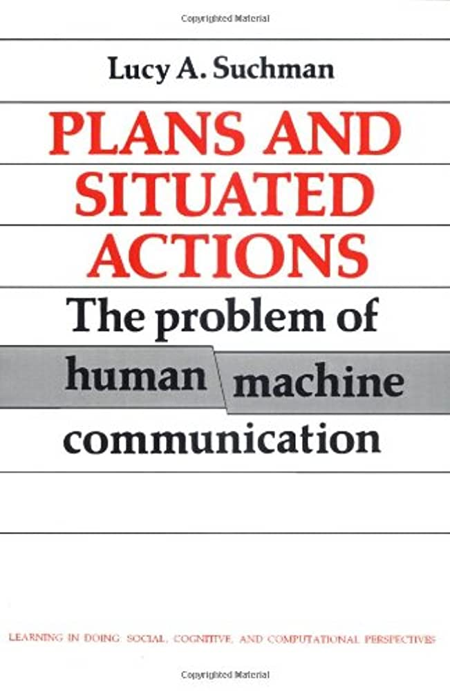

Plans and Situated Actions
Lucy Suchman

Lucy Suchman's Plans and Situated Action framework is a critical theory that challenges the conventional notion of AI as being an autonomous entity, separate from human influence. Instead, it posits that the interactions between humans and machines are situated within specific contexts and shaped by social, cultural, and historical factors. By challenging the notion of AI as autonomous and independent, Suchman's work reminds us that the development and deployment of AI is inherently intertwined with social and cultural factors. As AI continues to shape our world, it is crucial that we approach it with a critical eye and a deep understanding of its situatedness. One of the key insights of Suchman's framework is the idea of imposing our humanity onto machines. This means that our expectations of AI are often shaped by our own experiences, desires, and biases, rather than the true capabilities of the technology. As a result, we may overestimate the intelligence and agency of machines, and assume that they are inherently better than humans in certain domains.
This tendency to overestimate AI is evident in the way that we interact with chatbots and other conversational agents. For example, some AI chatbots have been programmed to respond to questions that they do not understand with the phrase "tell me more," rather than admitting that they do not know the answer. This may give the impression that the machine is actively engaging in conversation and trying to learn, when in fact it is simply following a pre-programmed script.
This phenomenon of overestimating AI capabilities has broader implications for society. As AI becomes increasingly integrated into our daily lives, it is important to critically evaluate the assumptions and biases that underlie our interactions with these systems. For instance, the use of AI in hiring processes may perpetuate systemic biases if the algorithms are trained on historical data that reflects existing inequalities. Similarly, the use of AI in healthcare may lead to incorrect diagnoses if the technology is not thoroughly tested and validated before deployment.
Overall, Suchman's work highlights the importance of considering the broader social and cultural contexts in which AI is situated. By recognizing the ways in which our own biases and assumptions shape our interactions with technology, we can more effectively develop and deploy AI systems that are truly responsive to the needs and values of society. Furthermore, the Plans and Situated Action framework encourages a more collaborative and inclusive approach to the development of AI. Rather than viewing AI as a replacement for human labor, Suchman argues that it can be seen as a tool for augmenting and extending human capabilities. This perspective opens up new possibilities for designing AI systems that work in harmony with humans, rather than against them. Only by doing so can we ensure that AI is developed and deployed in a way that aligns with our values and serves the common good.
Lucy Suchman
Lucy Suchman's Plans and Situated Action framework is a critical theory that challenges the conventional notion of AI as being an autonomous entity, separate from human influence. Instead, it posits that the interactions between humans and machines are situated within specific contexts and shaped by social, cultural, and historical factors. By challenging the notion of AI as autonomous and independent, Suchman's work reminds us that the development and deployment of AI is inherently intertwined with social and cultural factors. As AI continues to shape our world, it is crucial that we approach it with a critical eye and a deep understanding of its situatedness. One of the key insights of Suchman's framework is the idea of imposing our humanity onto machines. This means that our expectations of AI are often shaped by our own experiences, desires, and biases, rather than the true capabilities of the technology. As a result, we may overestimate the intelligence and agency of machines, and assume that they are inherently better than humans in certain domains.
This tendency to overestimate AI is evident in the way that we interact with chatbots and other conversational agents. For example, some AI chatbots have been programmed to respond to questions that they do not understand with the phrase "tell me more," rather than admitting that they do not know the answer. This may give the impression that the machine is actively engaging in conversation and trying to learn, when in fact it is simply following a pre-programmed script. This phenomenon of overestimating AI capabilities has broader implications for society. As AI becomes increasingly integrated into our daily lives, it is important to critically evaluate the assumptions and biases that underlie our interactions with these systems. For instance, the use of AI in hiring processes may perpetuate systemic biases if the algorithms are trained on historical data that reflects existing inequalities. Similarly, the use of AI in healthcare may lead to incorrect diagnoses if the technology is not thoroughly tested and validated before deployment.
Overall, Suchman's work highlights the importance of considering the broader social and cultural contexts in which AI is situated. By recognizing the ways in which our own biases and assumptions shape our interactions with technology, we can more effectively develop and deploy AI systems that are truly responsive to the needs and values of society. Furthermore, the Plans and Situated Action framework encourages a more collaborative and inclusive approach to the development of AI. Rather than viewing AI as a replacement for human labor, Suchman argues that it can be seen as a tool for augmenting and extending human capabilities. This perspective opens up new possibilities for designing AI systems that work in harmony with humans, rather than against them. Only by doing so can we ensure that AI is developed and deployed in a way that aligns with our values and serves the common good.